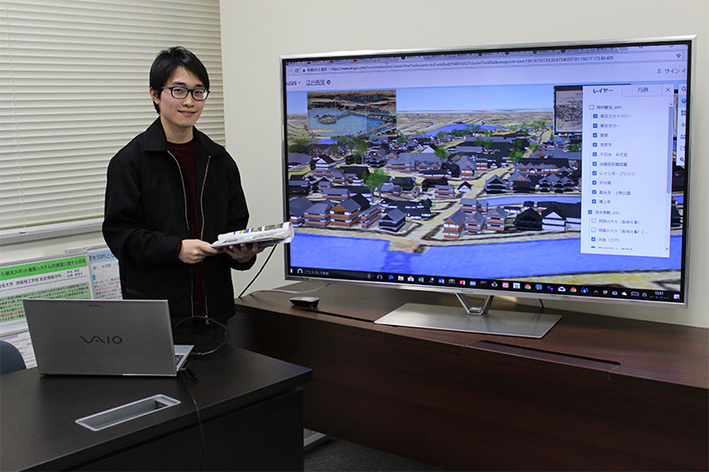

メディア掲載8:スタディサプリ（リクルート）で研究紹介
2018年11月にリクルートの提供するスタディサプリの大学受験生向けサイト「やりたいことを見つけよう！」で、情報学を専攻する大学院生として紹介され、大学受験生向けに研究内容をわかりやすく説明した。
受賞歴2：UECものづくりコンテスト2017 優秀賞 受賞(電気通信大学:2017年6月)

（2017年6月） 応募総数36チームのうち、23チームが二次審査に進み、ビデオ審査およびポスターセッションによるアイディア提案が行われ、学内および学外の方の審査員による厳正なる審査が行われ、優秀賞（優勝）を受賞した。
受賞歴1：社会貢献賞 受賞(電気通信大学:2014年3月)

調布市全域の小学校の代表生徒を集めて、理科・科学実験の補助ボランティアを約一年行った。特に、上野の国立科学博物館引率では、小学生達に展示物の紹介を行った。
その活動が大学に伝わり、卒業式の日に社会貢献部門で社会貢献賞を授与された。